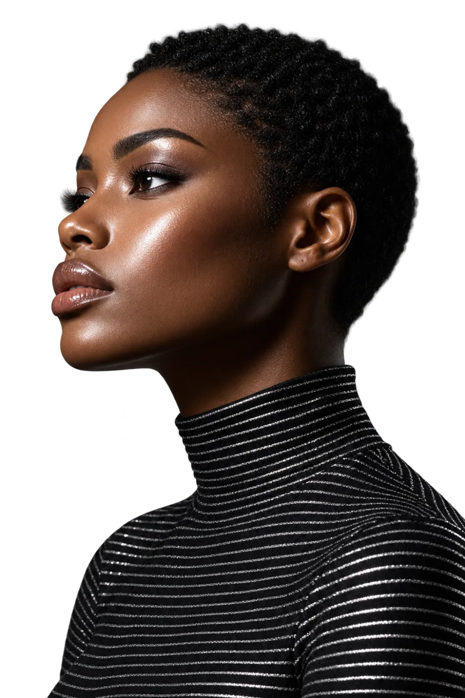

Collection No. 31 (Part 1)
| Song | Artists | Length | |
|---|---|---|---|
| The Last Bus Home Across a Sleeping City | Lina Moreau | 6:42 | |
| Letters We Wrote on the Back of Tickets | Tomás Ferreira | 5:15 | |
| Dancing in the Car Park Until the Lights Go Out | Ada Kwon | 8:03 | |
| Somewhere Between the Ninth and Tenth Floor | Jules Okoye | 7:51 | |
| A Postcard From the Town We Never Left | Lina Moreau | 4:47 | |
| Low Tide, Loud Radio | Ada Kwon | 6:10 |
Lina Moreau · Tomás Ferreira · Ada Kwon · Jules Okoye · Mira Sato · Ben Adair · Noor Haddad · Felix Brandt · Iris Vale · Teo Marques · Sun Park · Elsa Lind · Kofi Mensah · Rosa Ibarra